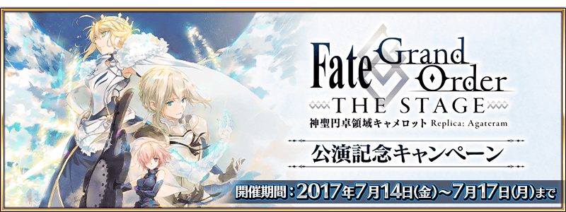
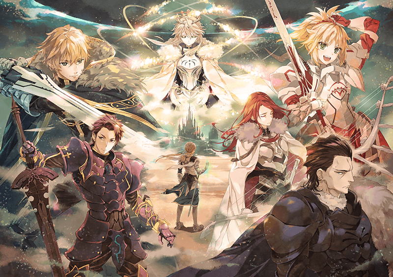
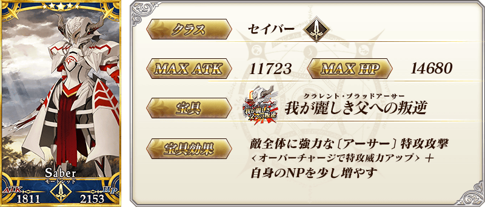
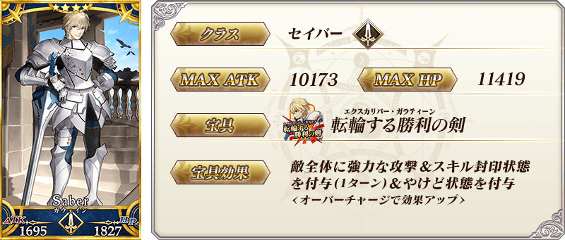
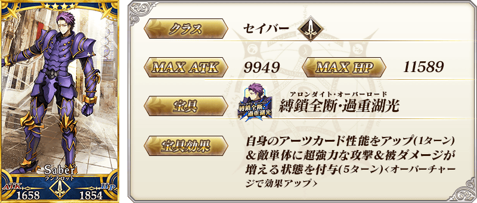
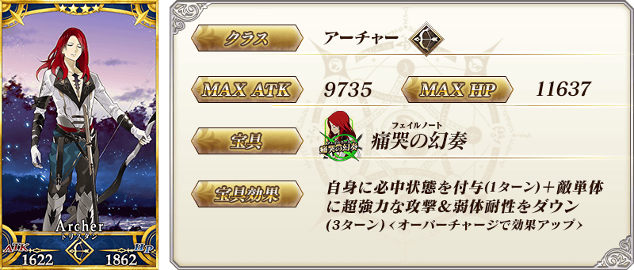
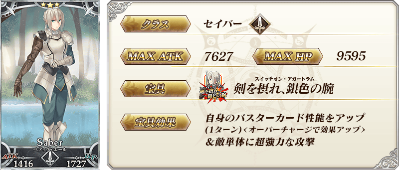
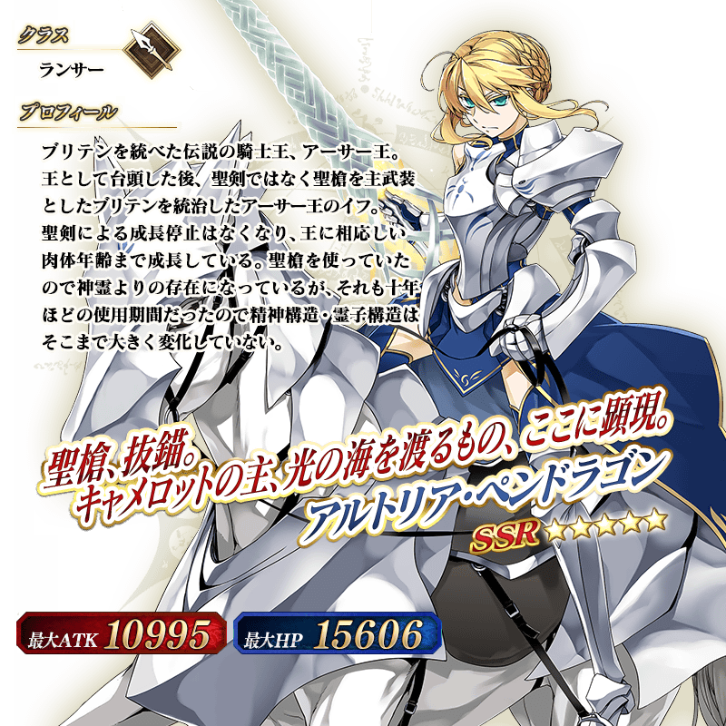

◆舉辦期間◆
2017年7月14日(五) AM3:00～7月17日(一) 22:59
◆宣傳活動概要◆
2017年7月14日(五) AM3:00～7月17日(一) 23:59的期間，實施為了紀念舞台劇「Fate/Grand Order THE STAGE –神聖圓桌領域卡美洛–」公演的「FGO THE STAGE公演記念宣傳活動」！
活動期間中登入的話，每天贈送聖晶石、大騎士勲章各1個！
※請注意由於自7月18日(二) AM0:00有臨時維修，領取期限為7月17日(一) 23:59。
※第1次的登入獎勵是從7月14日(五) AM3:00配發。
※之後的登入獎勵會在AM3:00配發。
※連續登入天數中斷的話，無法領取之後的禮物。
※最多可領取4次，根據開始遊戲的時間點，可能無法到此上限。
| 連續登入天數 | 贈送內容 |
|---|---|
| 第1天 | 聖晶石 1個、大騎士勲章 1個 |
| 第2天 | 聖晶石 1個、大騎士勲章 1個 |
| 第3天 | 聖晶石 1個、大騎士勲章 1個 |
| 第4天 | 聖晶石 1個、大騎士勲章 1個 |
「Fate/Grand Order THE STAGE –神聖圓桌領域卡美洛–」夏公演開始！

「Fate/Grand Order THE STAGE –神聖圓桌領域卡美洛–」為奈須きのこ擔任劇本撰寫本作的「第六特異點 神聖圓桌領域 卡美洛」做為原案舞台劇化。
舞台劇的印象視覺圖為擔任『Fate/Grand Order』開頭動畫角色設計的細居美恵子所繪製。
自7月14日(五) 開始夏公演，決定自9月29日(五) 秋公演。
【「Fate/Grand Order THE STAGE –神聖圓桌領域卡美洛-」概要】
■公演日
＜夏公演＞2017年7月14日(五)～7月17日(一)
＜秋公演＞2017年9月29日(五)～10月8日(日)
■劇場:Zeppブルーシアター六本木
■官方網站: http://stage.fate-go.jp/
■官方推特: @fgothestage
◆「FGO THE STAGE公演記念Pick Up召喚」期間◆
期間:2017年7月14日(五) 17:00～7月17日(一) 22:59
舉辦期間限定「FGO THE STAGE公演記念Pick Up召喚」！
※未到達第六特異點的狀態也能進行FGO THE STAGE公演記念Pick Up召喚。
為了紀念舞台劇「Fate/Grand Order THE STAGE –神聖圓桌領域卡美洛–」的公演，在「第六特異點 神聖圓桌領域卡美洛」活躍的Servant「★5(SSR)莫德雷德(Saber)」「★5(SSR)阿爾托莉亞・潘德拉剛(Lancer)」「★4(SR)高文」「★4(SR)蘭斯洛特(Saber)」「★4(SR)崔斯坦」「★3(R)貝德維爾」Pick Up！
Pick Up期間中，Pick Up Servant的出現機率提升！
※莫德雷德(Saber)、阿爾托莉亞・潘德拉剛(Lancer)、高文、蘭斯洛特(Saber)、崔斯坦、貝德維爾在Pick Up期間結束後仍會在故事召喚抽到。
詳情請在聖晶石召喚畫面左下的召喚詳細確認。
10次召喚中確定1張★4(SR)以上和確定1位★3(R)以上的Servant！
※確定★4(SR)以上包含Servant和概念禮裝。
※所謂「出現機率提升」意指比同稀有度的Servant出現機率更高的設定。










